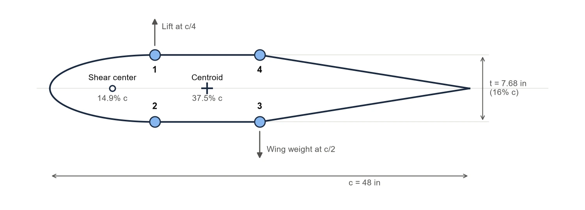
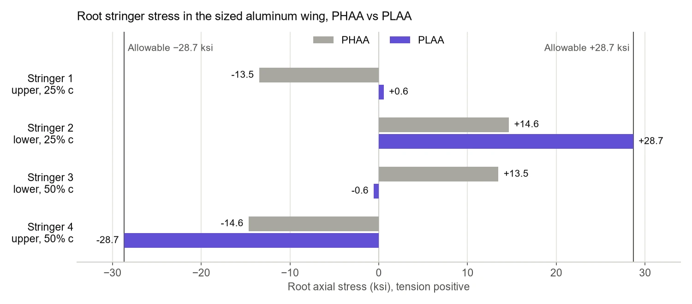
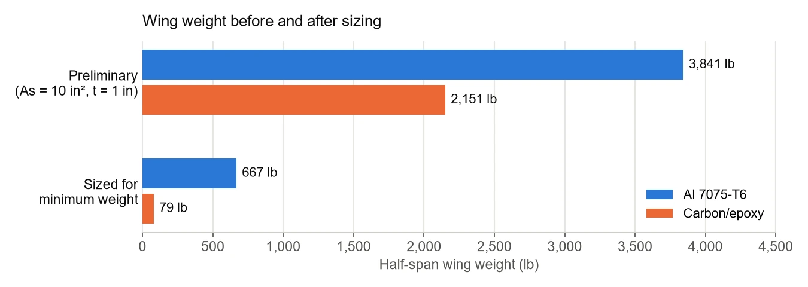
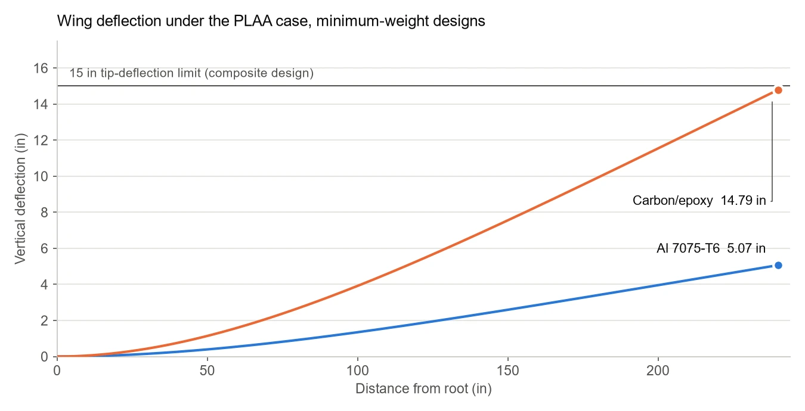

For UCSD's SE 160A, I wrote the analysis function at the core of a MATLAB wing analysis program. It computes the bending, shear, and torsion response of a single-cell, stringer-and-skin half-wing modeled on a Cessna 172: 240 in of span, a 48 in chord, and a section 16% thick.
I then used it to size the wing for minimum weight across five load cases from the V-n envelope, once in Al 7075-T6 and once in carbon/epoxy. The aluminum wing comes in at 667 lb per half-span and the composite wing at 79 lb. The composite design ends up close to its strength and stiffness limits at the same time.
The Wing Model

The idealized cross-section, with the stringer numbering used throughout this page. The centroid and shear center are the analysis results for the sized design.
The section is idealized as an elliptical nose out to the quarter chord, flat panels to the half chord, and a straight taper to the trailing edge. Four stringers sit in the flat region, one pair at 25% and one at 50% chord. The stringers carry all of the bending, so the modulus-weighted centroid and the bending stiffnesses come from them alone. The skin closes the cell: it carries the shear flow from transverse shear and torsion, sets the torsional stiffness through Bredt's formula, and adds its weight. A further 15% of structural weight is added for secondary structure.
Lift acts at the quarter chord and the wing's own weight at the half chord. The analysis moves both to the centroid and adds the torque each offset creates, then integrates the distributed loads into internal shear, bending moment, and torque along the span. From those come the stringer axial stresses, the skin shear stresses, a margin of safety for every member, and the deflection, slope, and twist along the wing.
Five Load Cases
The load cases are cruise plus the four corners of the V-n envelope: positive and negative load factor, each at high and low angle of attack. Lift varies along the span as a fourth-order polynomial, drag as a tenth-order one, and the aerodynamic twisting moment is constant.
| Load case | Load factor | Lift (lb/in) | Drag (lb/in) | Twist moment (lb·in/in) |
|---|---|---|---|---|
| Cruise | 1.0 | 15 | 1.8 | 50 |
| Positive high angle of attack (PHAA) | 3.8 | 57 | 2.4 | 15 |
| Positive low angle of attack (PLAA) | 3.8 | 57 | 60 | 200 |
| Negative high angle of attack (NHAA) | −1.5 | −22.5 | 2.4 | 15 |
| Negative low angle of attack (NLAA) | −1.5 | −22.5 | 60 | 200 |
The high and low angle-of-attack pairs carry identical lift. What separates them is the low angle-of-attack condition's much higher speed: 25 times the drag and over 13 times the twisting moment.
Why the Low Angle-of-Attack Case Sizes the Stringers
Since PHAA and PLAA share the same lift, it would be natural to expect them to load the stringers about equally. They do not. Lift bends the wing upward, putting the upper stringers in compression and the lower ones in tension by roughly 14 ksi each. PLAA's drag bends the wing aft at the same time, adding tension to the forward stringers and compression to the aft ones by almost the same amount.
The two bending stresses add on stringers 2 and 4 and nearly cancel on stringers 1 and 3. In the sized aluminum wing, that doubles the critical stress from 14.6 ksi in PHAA to 28.7 ksi in PLAA, exactly the allowable. Drag, not lift, is what finally sets the stringer area.

Root stringer stress in the sized aluminum wing. The allowable is the lower of yield divided by 1.1 and ultimate divided by 1.5.
Sizing for Minimum Weight
Both wings started from the same deliberately heavy preliminary design: 10 in² stringers and a 1 in skin. Every load case came out with large margins. I placed the stringer pairs at 25% and 50% chord, the positions that gave the lightest structure, then reduced stringer area and skin thickness until the margins in the governing cases approached zero.
The sized aluminum wing uses 5.01 in² stringers and a 0.0417 in skin. The carbon/epoxy wing needs only 0.919 in² stringers and a 0.0144 in skin, which takes the half-span weight from 667 lb to 79 lb, an 88% reduction.

Half-span wing weight for the preliminary and sized designs.
| Component | Cruise | PHAA | PLAA | NHAA | NLAA |
|---|---|---|---|---|---|
| Al 7075-T6, stringers | 5.91 | 0.96 | 0.0001 | 3.67 | 0.42 |
| Al 7075-T6, skin | 3.52 | 0.058 | 0.20 | 1.59 | 0.050 |
| Carbon/epoxy, stringers | 5.35 | 0.77 | 0.0000 | 3.28 | 0.49 |
| Carbon/epoxy, skin | 3.00 | 0.0055 | 0.048 | 1.47 | 0.16 |
Underlined values are the governing (lowest) margin for each component.
PLAA takes the stringers in both materials to zero margin. The skin, which carries the shear and torsion, is governed by NLAA in the aluminum wing and by PHAA in the composite one. Every member sits at or near zero margin in its governing case, which is what a minimum-weight design should look like.
Stiffness as the Second Constraint
Strength was not the only limit. Carrying the load with so much less material also makes the composite wing far less stiff, and its design had to keep tip deflection under 15 in. At its minimum-weight sizing, the PLAA tip deflection is 14.79 in, just inside that limit. The aluminum wing deflects only 5.07 in under the same load.
That leaves the composite wing with almost no room to remove more material. The price of the 588 lb saving is cost: carbon fiber typically runs more than ten times the price of aluminum per pound, before the added manufacturing expense.

Vertical deflection along the span under PLAA for both sized designs.